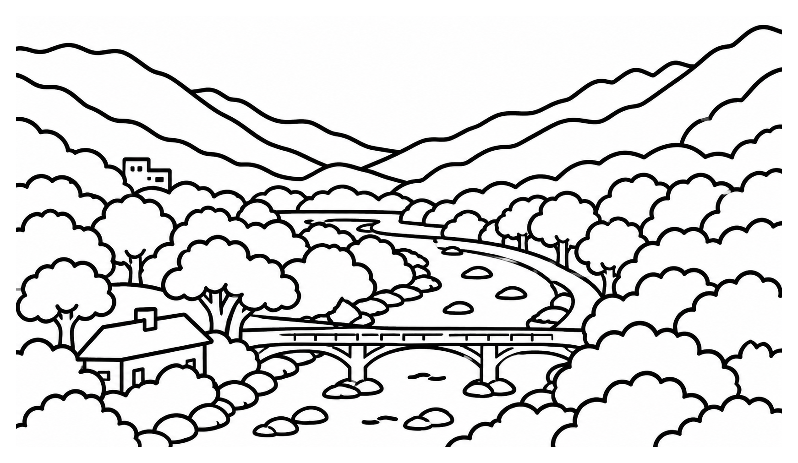

Nature
Mountain Valley Bridge
Explore a peaceful mountain valley with a winding river, a charming bridge, woodland trees and rocky riverbanks in this scenic colouring page for children.

Nature
Explore a peaceful mountain valley with a winding river, a charming bridge, woodland trees and rocky riverbanks in this scenic colouring page for children.
